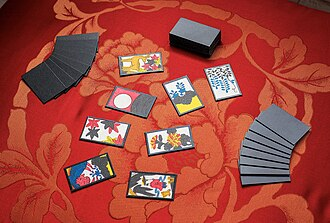
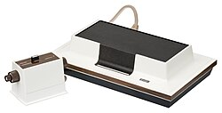
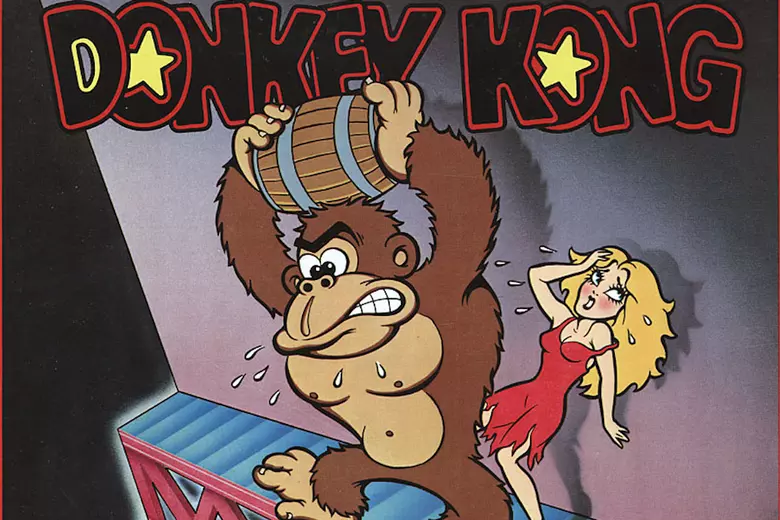
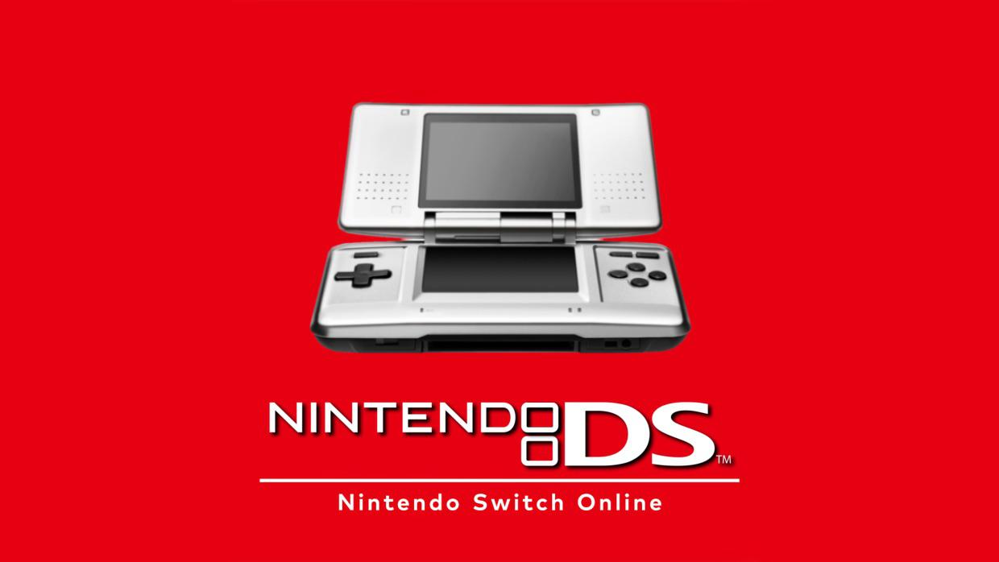

Nintendo
Nintendo was founded by Fusajiro Yamauchi on September 23rd, 1889, in Kyoto, Japan.
Original products

The company was originaly named Nintendo Koppai and sold items such as:
- Hanafuda (handcrafted Japanese flower playing cards) 1889
- Ultra Hand 1966
- Ultra Machine 1967
- Love Tester 1969
- Chiritori 1979
Video Games
Nintendo first started making video games in 1974 by distributing the Magnavox Odyssey console in Japan,
and it released its first home-grown video game consoles—the Color TV-Game series—in 1977.

Early Video Game milestones:
- 1889: Founded by Fusajiro Yamauchi as a playing card (Hanafuda) company.
- 1974: Distributed the Magnavox Odyssey video game console in Japan.
- 1975–1978: Entered the arcade and coin-operated game market (such as EVR Race in 1975 and microcomputer-based arcade games in 1978).
- 1977: Released its first proprietary home video game console line, the Color TV-Game, in Japan.
- 1980: Launched the portable Game & Watch handheld electronic game series.
- 1981: Released the hit arcade game Donkey Kong, designed by Shigeru Miyamoto.
Transformation of Nintendo
The massive success of the 1981 Donkey Kong arcade game completely transformed Nintendo,
saving its American division from bankruptcy and providing the massive cash injection required to build the global home console market.
Following the arcade release, a chain reaction of critical milestones permanently established Nintendo as an industry titan.

1. Character Spin-offs and Rebranding
- Jumpman became Mario: Originally named "Jumpman", the character was renamed Mario in the 1982 sequel Donkey Kong Jr., named after Mario Segale, the landlord of Nintendo of America's warehouse.
- The birth of Mario Bros. (1983): Shigeru Miyamoto gave Mario a brother, Luigi, and changed his profession from a carpenter to a plumber in this co-op arcade spin-off.
2. Legal Battle with Universal Studios (1982–1984)
- The King Kong lawsuit: Universal Studios sued Nintendo, claiming Donkey Kong infringed on their copyright for the King Kong movie franchise.
- Nintendo’s massive win: Nintendo's lawyer, John Kirby, successfully argued that King Kong was in the public domain and that Donkey Kong was a distinct parody.
- The impact: Winning this high-stakes suit gave Nintendo the confidence to aggressively protect and expand its own intellectual properties, and they later named their character Kirby in honor of their lawyer.
3. Funding the Famicom and the Home Console Era
- Financing the next generation: The enormous profits from Donkey Kong arcade cabinets directly funded the research and development of the Famicom (Family Computer), which launched in Japan in 1983.
- Reviving the global market: When the North American video game crash of 1983 wiped out the competition, Nintendo used its Donkey Kong wealth to redesign the Famicom into the Nintendo Entertainment System (NES), packaging it with Super Mario Bros. and successfully launching it in western markets by 1985.
- Game Boy (1989): Unified the portable gaming market, utilizing affordable monochrome screens and incredible battery life, later supercharged by the Pokémon phenomenon.
- Super Nintendo (SNES) and Nintendo 64 (1990–1996): The SNES dominated the 16-bit era. The N64 later pioneered analog control sticks and true 3D game design with masterpieces like Super Mario 64 and The Legend of Zelda: Ocarina of Time.
- GameCube (2001): Nintendo's last traditional console to compete head-to-head on graphics processing power with its rivals.
- Nintendo DS (2004): Introduced dual screens and touch controls, becoming the second best-selling video game system of all time.
- The Wii (2006): Abandoned traditional controllers for motion-sensing remotes. It became a global cultural phenomenon,
bringing gaming to seniors, families, and casual players alike. - The Wii U Misstep (2012): A confusing tablet-hybrid console that sold poorly, forcing Nintendo to rapidly rethink its hardware strategy.
- Nintendo Switch (2017): Blended home and handheld consoles into a single hybrid device.
Driven by system-sellers like Breath of the Wild and Animal Crossing: New Horizons, it became one of the most successful consoles in history. - Expanding Beyond Gaming: Modern Nintendo has evolved into a global entertainment brand.
They opened Super Nintendo World theme parks in Japan and Hollywood and co-produced The Super Mario Bros. Movie (2023), which grossed over $1.3 billion worldwide.
Modern Nintendo
After rescuing the video game market in the mid-1980s, Nintendo moved into its modern era, defined by a shift from chasing raw processing power to pioneering entirely new ways to play.
This strategy, famously called the "Blue Ocean Strategy" by former president Satoru Iwata, allowed Nintendo to thrive by creating unique hardware rather than directly competing with Sony and Microsoft.
1. The Handheld Revolution & 3D Gaming (1989–2001)
2. The Blue Ocean Era: Bluegrass & Mass Appeal (2004–2012)

3. The Switch and Transmedia Giant (2017–Present)